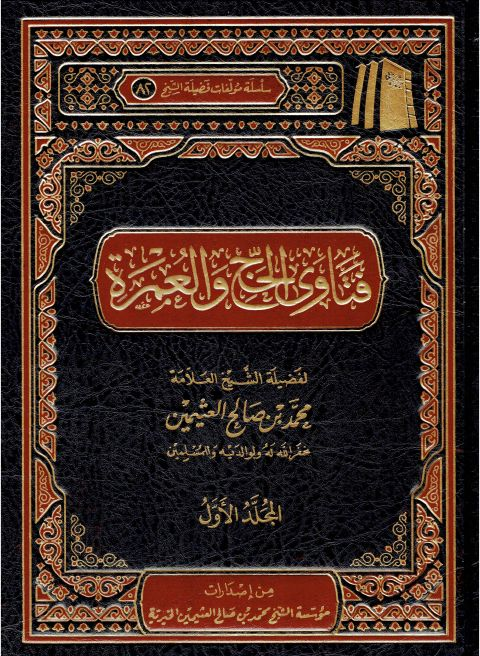

فتاوى الحج والعمرة
Authors: محمد بن صالح العثيمين
Publishers: مؤسسة الشيخ محمد بن صالح العثيمين الخيرية
Download Downloads need an internet connection.
- Published
- 1442هـ 2021م
- Country
- القصيم، السعودية
- Edition
- 2
- Volumes
- 2
- Pages
- 1609
- Type
- كتاب
- Category
- الفقه وأصوله
Description
▫️ العنوان: فتاوى الحج والعمرة ▪️ المؤلف: #محمد_بن_صالح_العثيمين ▫️ الناشر: #مؤسسة_الشيخ_محمد_بن_صالح_العثيمين_الخيرية ▪️ تاريخ النشر: 1442هـ 2021م ▫️ بلد النشر: القصيم، #السعودية ▪️ الطبعة: 2 ▫️ عدد الأجزاء: 2 ▪️ الصفحات: 1609 ▫️ نوع الوعاء: #كتاب ▪️ التصنيف الرئيسي: #الفقه_وأصوله ۪